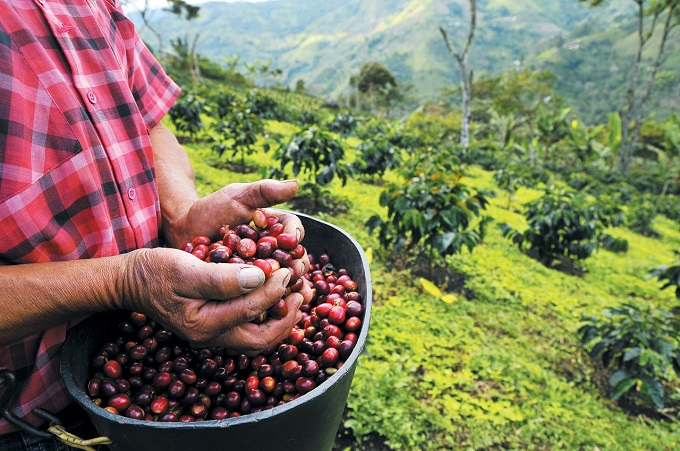
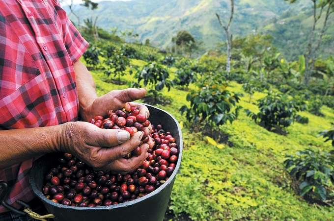

yemen coffee
For 200 years, Yemen was the only source of coffee. Originally the primary mode of travel this Arabic Coffee was named after the Mokha Port
types
- colombia
- yemen
type of coffee beans
- Arabica
- Robusta
| coffee producing countries around the world | METRIC TONS |
|---|---|
| BRAZIL | 2,680,515 |
| VIETNAM | 1,542,398 |
| COLOMBIA | 754,376 |
 
